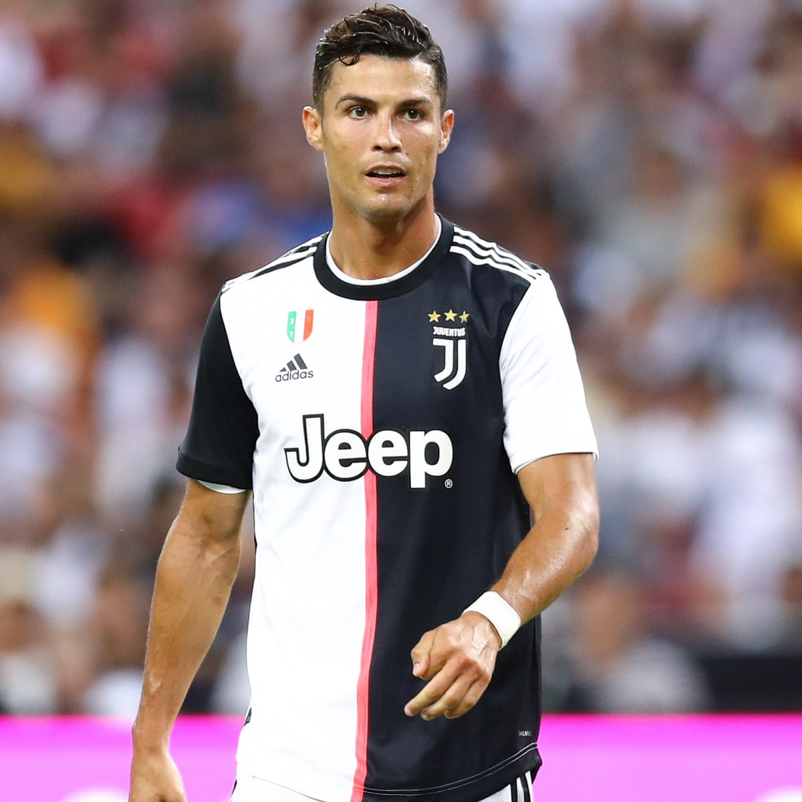
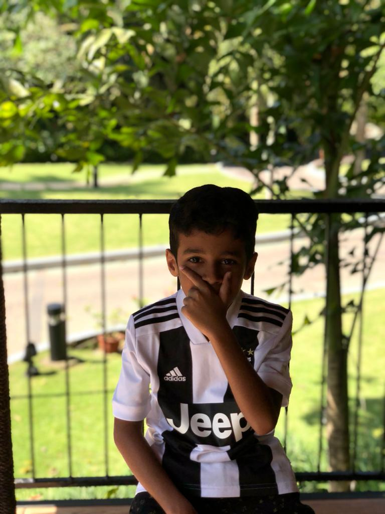

MY FAVOURITE GAME
FOOTBALL

My favourite hobby is football i like to play it a lot. I have got a great experience in it. When I first saw the game I was facsinated. Since then it became my favourite game. I play football with my friends when I go in the park. My friends also like the game very much.
MY FAVOURITE PLAYER
RONALDO

MY FAVOURITE PLAYER IS RONALDO. He became my favourite player because I was inspired by his dedication and efforts in the game
my work

inspired by ronaldo i took efforts in the game and learned it not only by playing but also by watching. i joined football classes and learned a lot more about the game